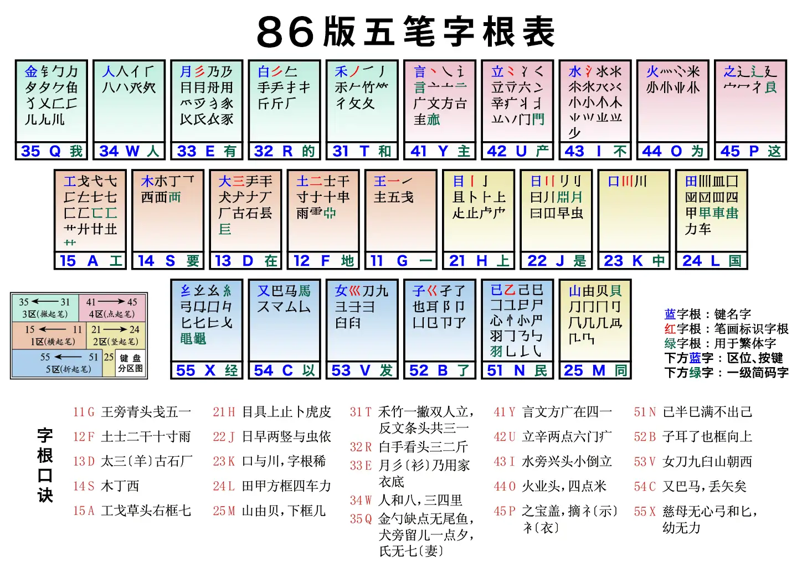
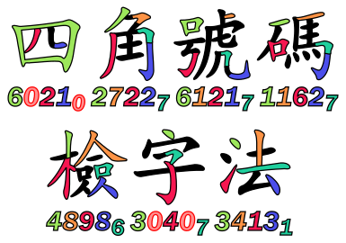

Chinese Encoding 中文相关代码
在中文 PH 里与中文相关的代码自然是特色。
拼音¶
汉语拼音是用拉丁字母来表示普通话读音的方法，规范来自《汉语拼音方案》。你可以从新华字典的附录中找到这份方案的内容。
声母表¶
| 字母 | b | p | m | f | d | t | n | l |
| 发音 | ㄅ 玻 | ㄆ 坡 | ㄇ 摸 | ㄈ 佛 | ㄉ 得 | ㄊ 特 | ㄋ 讷 | ㄌ 勒 |
| 字母 | g | k | h | j | q | x | ||
| 发音 | ㄍ 哥 | ㄎ 科 | ㄏ 喝 | ㄐ 基 | ㄑ 欺 | ㄒ 希 | ||
| 字母 | zh | ch | sh | r | z | c | s | |
| 发音 | ㄓ 知 | ㄔ 蚩 | ㄕ 诗 | ㄖ 日 | ㄗ 资 | ㄘ 雌 | ㄙ 思 |
韵母表¶
| 开口呼 | 齐齿呼 | 合口呼 | 撮口呼 | |
|---|---|---|---|---|
| 单 元 音 韵 母 |
空韵 ㄭ 师 |
i / yi 丨 衣 |
u / wu ㄨ 乌 |
ü / yu ㄩ 迂 |
| a ㄚ 啊 |
ia / ya 丨ㄚ 呀 |
ua / wa ㄨㄚ 蛙 |
||
| o ㄛ 喔 |
uo / wo ㄨㄛ 窝 |
|||
| e ㄜ 鹅 |
||||
| ê ㄝ 诶 |
ie / ye 丨ㄝ 耶 |
üe / yue ㄩㄝ 约 | ||
| er ㄦ 儿 |
||||
| 复 元 音 韵 母 |
ai ㄞ 哀 |
uai / wai ㄨㄞ 歪 |
||
| ei ㄟ 诶 |
uei(ui) / wei ㄨㄟ 威 |
|||
| ao ㄠ 熬 |
iao / yao 丨ㄠ 腰 |
|||
| ou ㄡ 欧 |
iou(iu) / you 丨ㄡ 优 |
|||
| 带 鼻 音 韵 母 |
an ㄢ 安 |
ian / yan 丨ㄢ 烟 |
uan / wan ㄨㄢ 弯 |
üan / yuan ㄩㄢ 冤 |
| en ㄣ 恩 |
uen(un) / wen ㄨㄣ 温 |
|||
| in / yin 丨ㄣ 因 |
ün / yun ㄩㄣ 晕 | |||
| ang ㄤ 昂 |
iang / yang 丨ㄤ 央 |
uang / wang ㄨㄤ 汪 |
||
| eng ㄥ 亨的韵母 |
ing / ying 丨ㄥ 英 |
ueng / weng ㄨㄥ 翁 |
||
| ong ㄨㄥ 轰的韵母 |
iong / yong ㄩㄥ 雍 |
拼音：扩展阅读¶
- Bilibili Siphercase : 重新认识「汉语拼音」
其他中文读音表示法¶
汉语拼音是目前中国大陆主要使用的拉丁化读音表示法。在我国部分地区，还会用到比较特殊的读音表示。
注音符号¶
注音符号 (Bopomofo) 诞生于民国时期，目前是我国台湾地区广为流行的读音表示方案。你可以在本章上方的拼音声母、韵母表里找到与汉语拼音对应的注音符号。
注音符号第二式¶
注音符号第二式，又称国音二式，是台湾在 1980 年代公布的基于注音符号的读音罗马字方案，与汉语拼音类似使用英文字母来表示。
威妥玛拼音¶
威妥玛拼音 (Wade-Giles) 又称韦氏拼音、威翟式拼音，是第一套将汉语拉丁化的方案，在清朝时期便已有之。 威妥玛拼音的特点是使用了非常多的符号，比如用撇号 ' 来表示送气，韵母 ê 等。 比如北京 Pei-ching ，天津 T'ien-chin 等。
威妥玛拼音使用数字 1、2、3、4 标注声调。
邮政式拼音¶
邮政式拼音是为了迎合二十世纪初期打电报的需要，在威妥玛拼音的基础上，去掉了附加符号的一种拼写法。 就算是现在国内也有很多地方能够看到邮政式拼音留下的遗产， 比如清华大学中清华的拼写 Tsinghua ，北京大学中北京的拼写 Peking ，青岛啤酒中青岛的拼写 Tsingtao 等。
拼音、注音、威妥玛转换工具¶
方言拼音¶
比较著名的方言拼音包括粤语拼音、吴语拼音等。
粤拼¶
香港语言学学会粤语拼音方案，简称粤拼，是现在主流的粤语拼音方案。 粤拼的拼音字母是由拉丁字母 a 至 z 组成，其中 q、r、v、x 不用。 粤拼共有 19 个声母和 58 个韵母。字调则以阿拉伯数字 1 至 6 标示。
关于粤拼方案，可以查看这里：香港語言學學會粵語拼音方案
反切¶
反切是用两个汉字给一个汉字注音的方法。两汉字中前一个字取其声母，后一个字取其韵母和声调，拼合出被注音字的读音。(1)
- 古代的汉文是竖着写的，因而两个汉字的前一个字通常称为上字，而后一个字被称为下字。
举例：
- 苏：素姑切。素取声母，姑取韵母和声调。
- 杭：胡郎切。胡取声母，郎取韵母和声调。
需要注意的是，古字典的反切只适用于当时的古音。汉语发展到现在，读音经过了诸多改变，以前制定的反切如今已无法简单套用。
查询古音的网站：字统网
五笔¶
五笔又称为王码，创作人是王永民，创作于 1983 年。 五笔是作为拼音之外的另一种广为使用的输入法，其特色是能够在不知道汉字读音的情况下也能打出来字，完全依据笔画和字形特征对汉字进行编码。
五笔的核心思想在于拆字，将汉字拆成组成汉字的字根，然后按笔画顺序依次输入。举例：
- 解：拆分成「⺈」(q)、「用」(e)、「刀」(v)、「⿱𠂉一」、「丨」(h)，一共五个部件，取前三个和最后一个编码，为 qevh 。
- 谜：拆分成「讠」(y)、「米」(o)、「辶」(p)，取三个，加末位识别码「左右末笔为捺」(y)，为 yopy 。

五笔字根表1
以上为 86 版本的五笔字根。在这之后还有「98版」和「新世纪版」两个版本，对少许字根做出了更改，本 Wiki 不进行细述。
五笔输入法解决了过去拼音输入法的一大弊端，即重码数量较多，打一个字的字音可能要翻好几页才能翻到你要的那个字。 五笔输入法的重码率非常低，打字速度很快，因此一度广为传播。 但现如今由于拼音输入法越来越智能，加之五笔输入法的学习门槛较高（需要背会每一个按键对应的字根），年轻一代的中国人更常使用拼音输入法。
五笔工具¶
由五笔输入汉字：
由汉字反查五笔：
仓颉¶
仓颉输入法的主要受众在广东、香港、台湾等地，在繁体中文的输入法中有着重要的地位。 类似五笔的拆字思想，仓颉输入法也有字根，但字根数为24个，包含「哲理类」、「笔画类」、「人体类」、「字形类」四种类别，以及两个特殊键位 X 和 Z。
仓颉键盘2
仓颉工具¶
由仓颉输入汉字：
由汉字反查仓颉：
四角号码¶
四角号码的诞生在拼音之前，民国时期作为一种常用检字方案存在。 四角号码检字是将一个字的左上、右上、左下、右下的四个部分摘取出来， 使用一个数字描述每一个部分的方法。有时在最后增加一位补码，称为“附角”，故最多为五码。

四角号码检字法3
四角号码工具¶
中文电码¶
在仍然使用电报的时期，通过电报传送中文信息的需要用到中文电码。 中文电码表采用了四位阿拉伯数字作代号，从0001到9999按四位数顺序排列，用四位数字表示最多一万个汉字、字母和符号。
中文电码工具¶
通用规范汉字表¶
《通用规范汉字表》是教育部发布的一份表格，收集了8105个常用的汉字，分为一、二、三级，根据使用度进行排列。
获取地址：
-
Cangjie6, CC BY-SA 4.0, via Wikimedia Commons ↩
-
Cangjie6, Jacek Fink-Finowicki, CC BY-SA 4.0, via Wikimedia Commons ↩
-
159265, CC BY-SA 3.0, via Wikimedia Commons ↩
{kind=link}
{kind=link}
{kind=link}